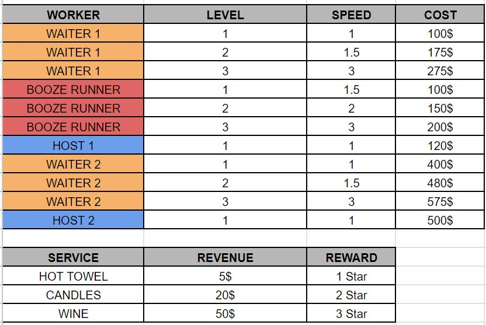
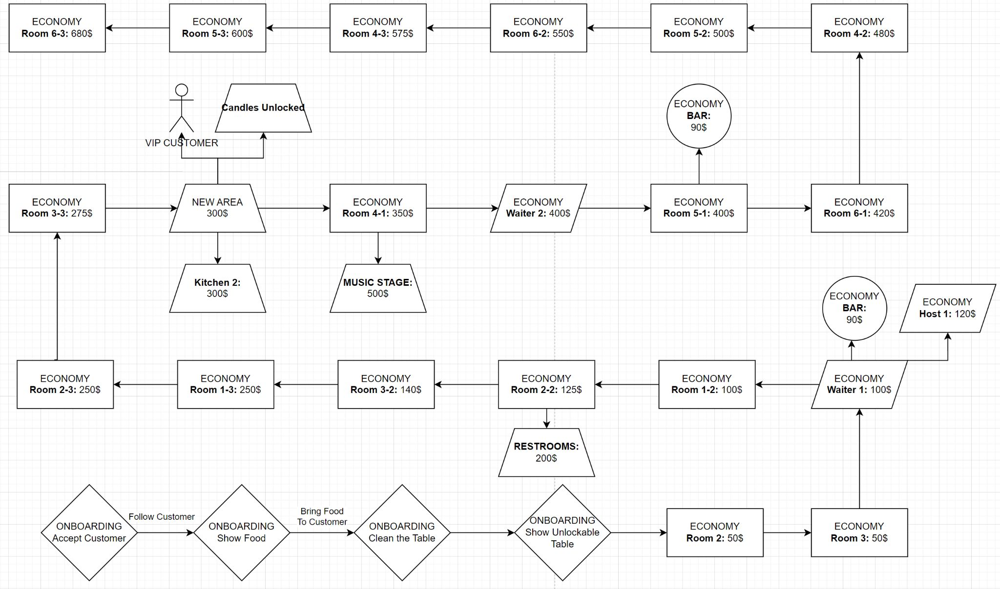
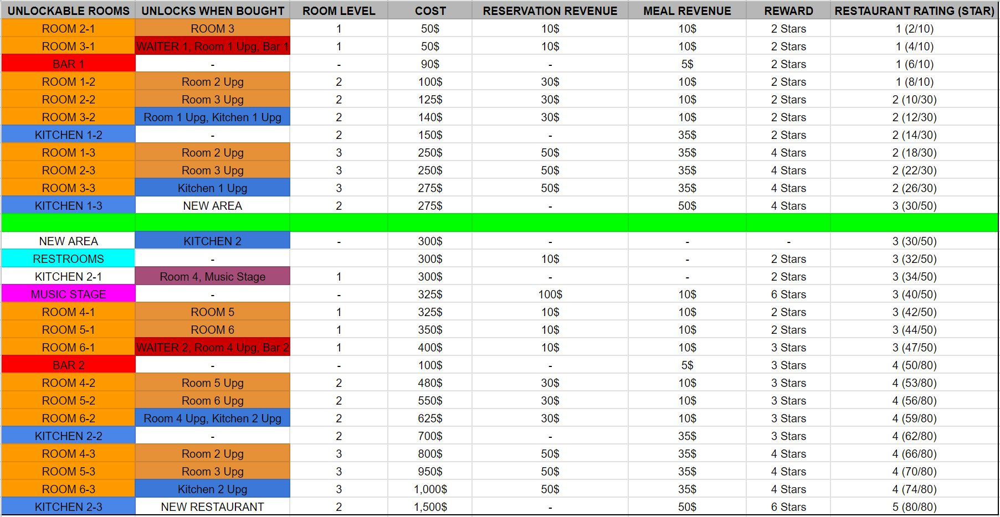
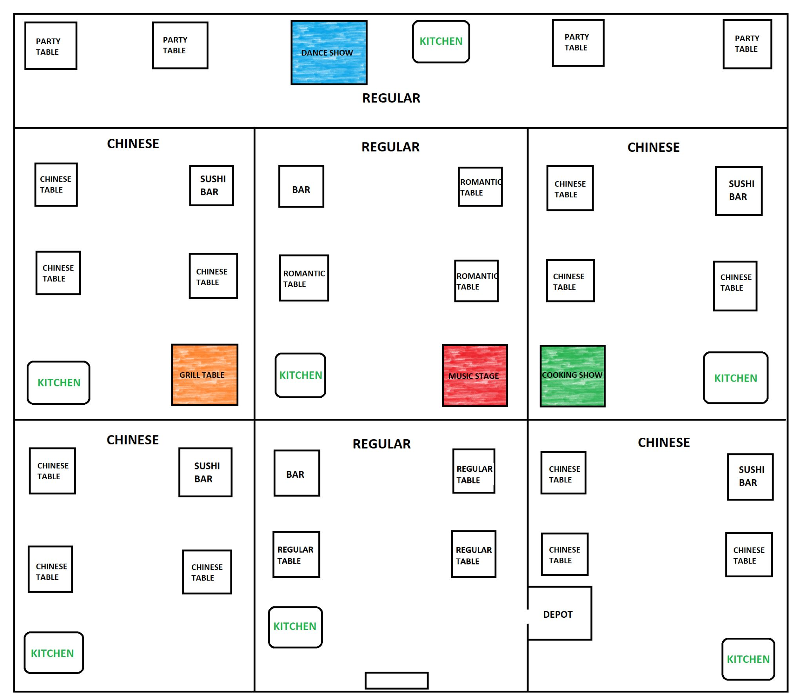
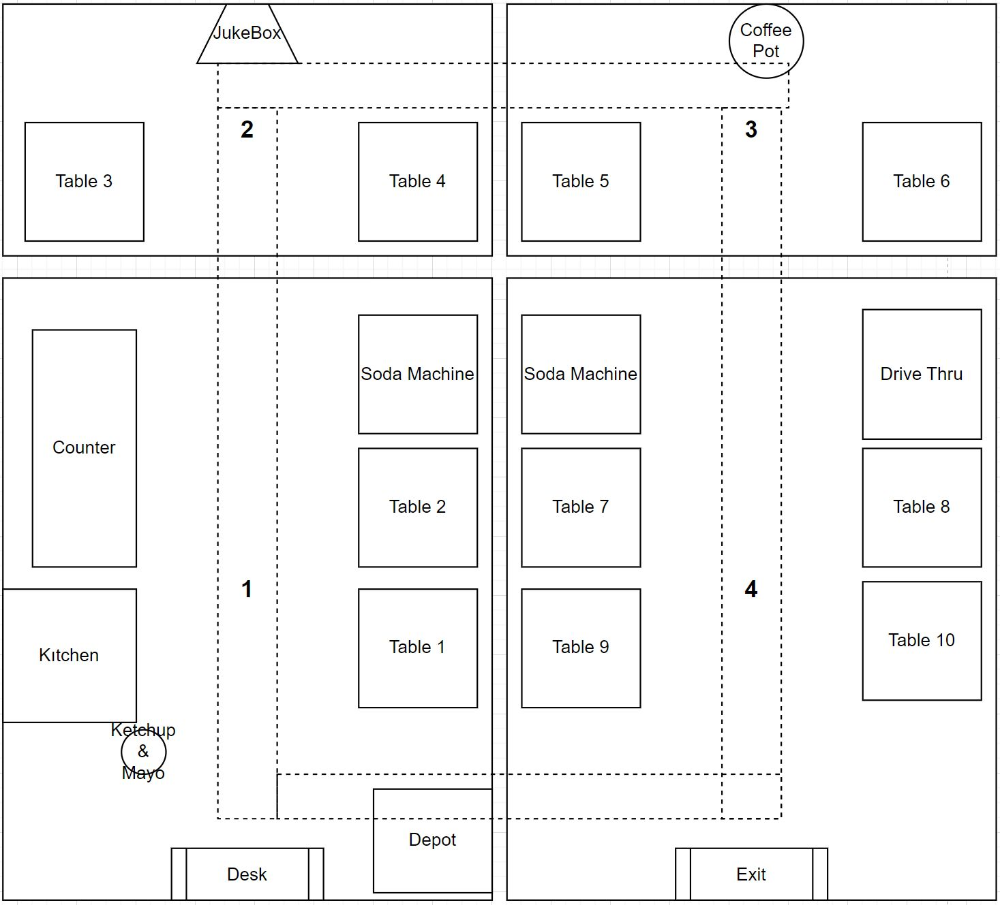
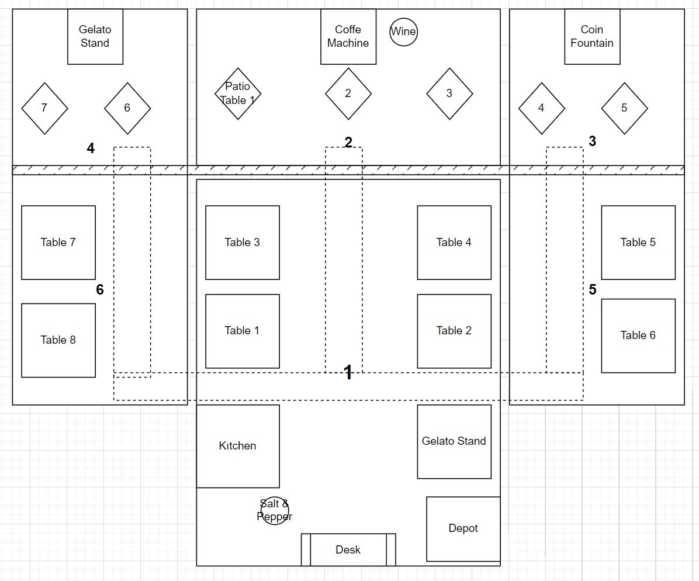
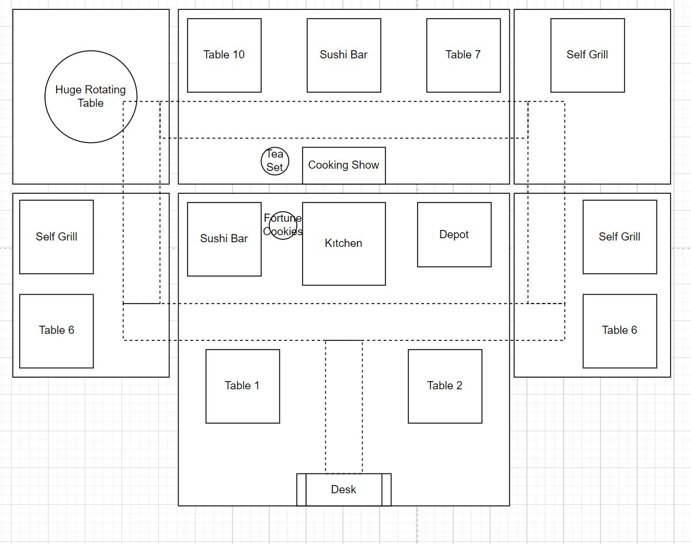
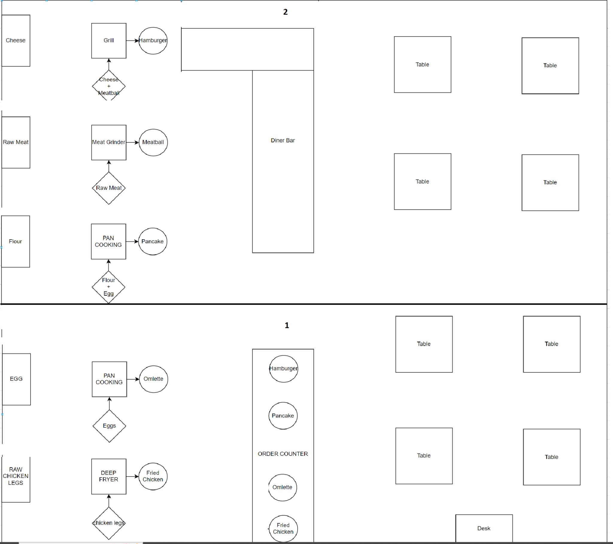

Fancy Restaurant
Soft-launched restaurant manager. I built the core loop, upgrade system and economy.
Fancy Restaurant
Hybrid-casual restaurant management game. It was in soft launch for 7 months and reached 300K+ downloads. I reworked the design four times from player data and publisher feedback.
- My role
- Game Designer & Developer
- Team
- Tolian Games
- Duration
- 7-month soft launch
- Engine / tools
- Unity
What I did
- Core loop: Seat guests, serve them, collect money and reinvest it. Hired staff later run the restaurant for the player.
- Economy: Two upgrade trees and rewarded-video boosts, tuned to playtime targets.
- Live iteration: I changed the scope from funnel data. For example, I shortened section 2, where most players quit.
🔒 No playable link or repository: the soft launch has ended, and the publisher NDA covers the build and source code.
How it works
Click a screenshot to open it full size.
Overview Seven months of reworks
I planned the whole progression on paper before building it, with a cost, revenue and star reward for every unlock. Each rework after that started from funnel data or publisher feedback. The sections below show what the signal was and what I changed.
V1 · Nov 2023 Core loop and first economy
- Loop: The player seats guests, serves them, and unlocks and upgrades tables. Later they hire waiters and food runners, and the restaurant runs itself. Joystick and stack-carry controls, no lose condition.
- Progression: Every purchase pays stars. The restaurant rating climbs to 5 stars, which finishes the level.
- Planned on paper first: Each unlockable has a cost, what it opens next, its reservation and meal revenue and its star reward, from $50 for the first room to $1,500 for the last kitchen upgrade.
After the first build I simplified the economy, reordered the upgrade areas so they do not all open at once, lowered tips, and added a short delay before money is spent, so walking over a pad does not buy by accident. I also replaced the waiter upgrade with a second waiter, so faster service is visible.



Iteration 2 · Dec 2023 – Jan 2024 Shorten the early game
A management game has no levels, so every table and section unlock sent a "level passed" analytics event. The funnel showed that most players had quit by event 12, the second table of section 2.
I shortened section 2 and cut the slow steps: cleaning tables, choosing a table type and carrying crates to special tables.
Players quit before the game showed them anything new. A shorter section 2 gets them to the next unlock sooner.
- Wayfinding: A compass button points to everything that can be bought, and the camera pans to each newly opened area.
- Curiosity: One special place per section (music stage, cooking show, grill table, dance show), so players wonder what unlocks next.
- Supply runs: Raw fish to the sushi bars, raw meat to the grill and crates to the bar, all carried from a depot.
| Before | After |
|---|---|
| Tables had to be cleaned before seating new guests. | Cleaning removed. |
| The player chose a Romantic or Party table at the second upgrade. | Table types are fixed per section. The upgrade only picks a skin. |
| Crates had to be carried to special tables to prepare them. | Special tables are always ready. |
| No special requests. | Each table type has its own request, for example hot towels before the meal. |

Iteration 3 · Jan – Feb 2024 One restaurant theme per area
Publisher feedback: the food should match the restaurant type, the economy needed some grind, and the game should start smaller.
Each new area is a different restaurant with its own special places and guest requests. The first restaurant opens with two seats. Carry capacity starts low and is earned back through upgrades.
A new theme makes each area feel new. A smaller start leaves more for the player to earn.
Each special place earns differently. The drive-thru pays fast because nobody waits for a seat. The jukebox and the coin fountain give small passive income. The soda machine and the gelato stand only earn while they are kept stocked.
| Theme | Special places | Guest requests |
|---|---|---|
| Diner | Self-serve counter, jukebox, drive-thru, soda machine | Ketchup & mayo, coffee refill |
| Italian | Gelato stand, coffee machine, coin fountain | Salt & pepper, wine |
| Chinese | Sushi bar, self grill, cooking show, rotating table | Fortune cookies, green tea |



Iteration 4 · Mar 2024 Monetization through the economy alone
The brief was to test rewarded video for soft currency. Players who skip videos should take 15–20 minutes longer. Players who watch keep the current 30 minutes or so. No map or mechanic changes.
I listed where players got stuck and attached a fix or a rewarded video to each bottleneck.
Each video is offered where the player is already stuck, so no map or mechanic had to change.
Added in the same scope:
- Restaurant upgrades: Purchase discount, tip income, reservation income, bonus tip for special requests.
- Staff upgrades: Player and waiter stack count; player, waiter, host and cook speed.
- Decoration store: Cosmetic items. Some of them add small boosts such as +5% tip income.
| Bottleneck | Fix |
|---|---|
| Cook speed is fixed and cannot keep up as tables are added. | A clock pickup in the restaurant triggers a cook-speed boost. |
| Stars come too fast, so new areas open before upgrades are finished. | An area's star requirement equals the stars its upgrades give. A video-only third upgrade option pays extra stars. |
| The player is short of cash for the next upgrade. | A money case appears when the balance is below the next upgrade cost. |
| Carry capacity is too small to keep up with the tables. | A video gives unlimited carry for a limited time. The extra stack is lost when it ends. |
Iteration 5 · May 2024 Production lines
- Raw materials: Trucks deliver to a counter with a limited stack. Two upgrades: delivery speed, and a carrier who moves raw food to the right station.
- Stations: Three interaction points: drop raw food, stand to cook (until a cook is hired), pick up the result.
- Recipe chains: Raw Meat → Meatball, Cheese + Meatball → Hamburger, Flour → Dough, Dough + Cheese → Pizza. Intermediate products feed the next station.
